ASU again ranks No. 1 in the US for global impactFind out more
For the seventh year in a row, ASU has been named the top institution in the U.S. for its impact on global challenges, reflecting the university’s work to improve lives around the world.
Find out moreListening… tap to stop
Welcome!
How can we help you today?
Your future starts here
Enter a keyword to search, or choose from the categories.
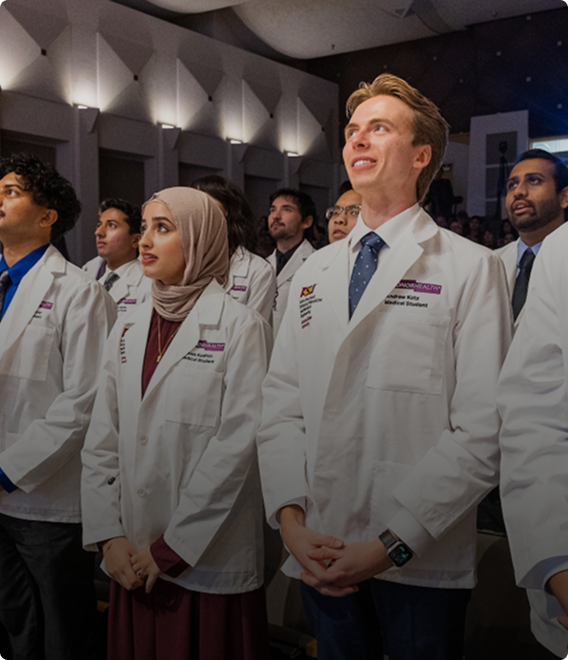
A new generation of physician-engineers begins at ASU
Medical school opens with an engineering-first curriculum.
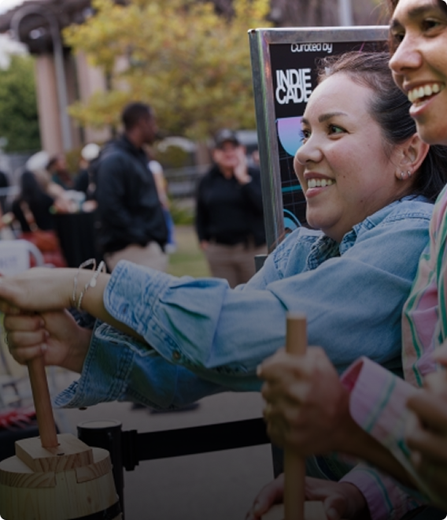
The New game degree launches in Los Angeles
Game design and development, taught in the heart of the industry.
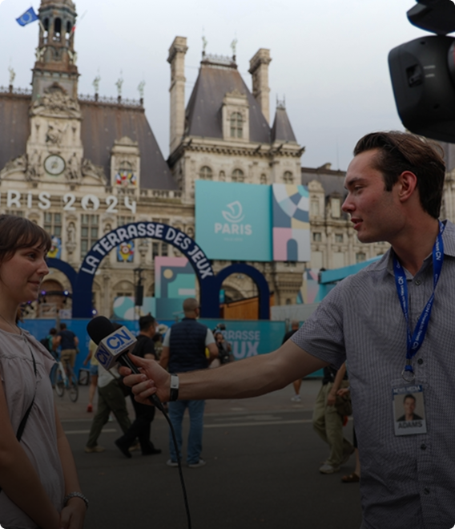
Students part of Venice Film Festival documentary
Film students’ work premieres on the festival’s world stage.
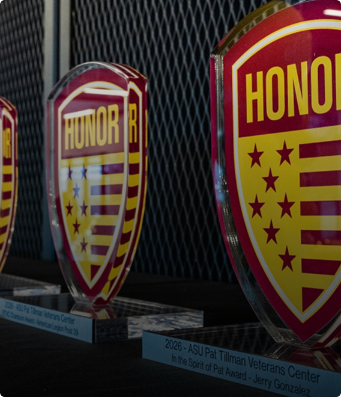
ASU No. 2 public university for GI Bill students
Recognized for support of veterans and military-connected students.
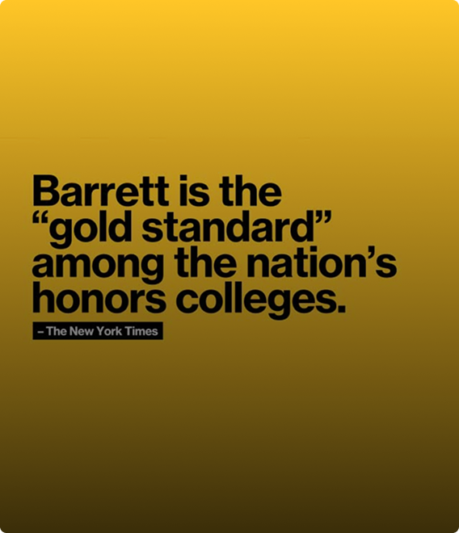
Barrett, The Honors College is creating bright futures
Honors education with the reach of a Tier 1 research university.
New facility expands student research opportunities
New labs put undergraduates on funded research teams.
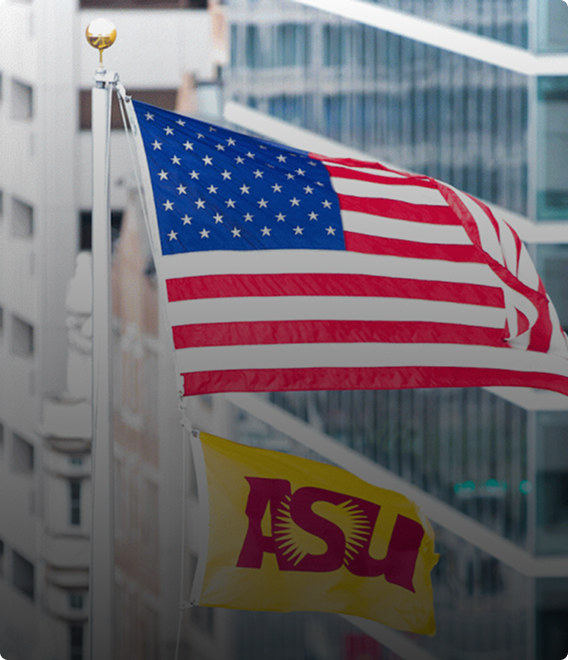
Preparing the future workforce for the West Valley’s needs
Programs built around the region’s fastest-growing employers.
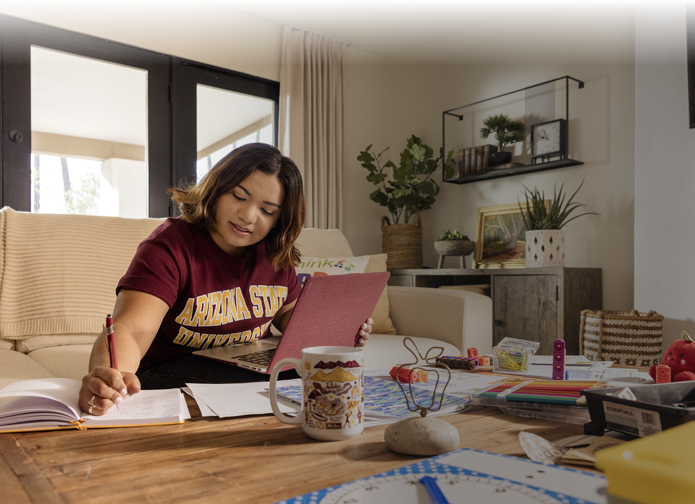
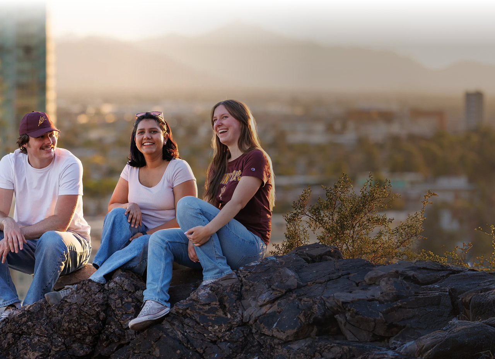
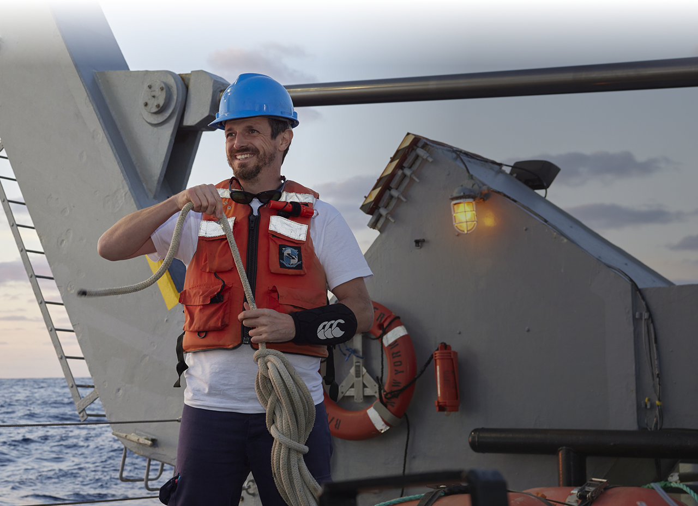
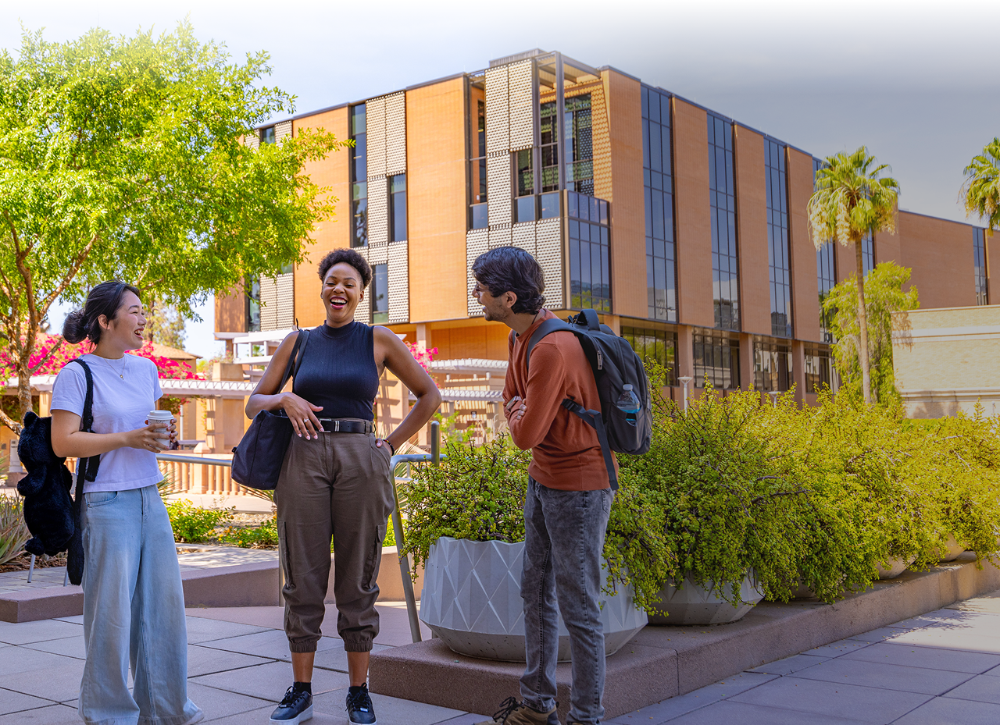
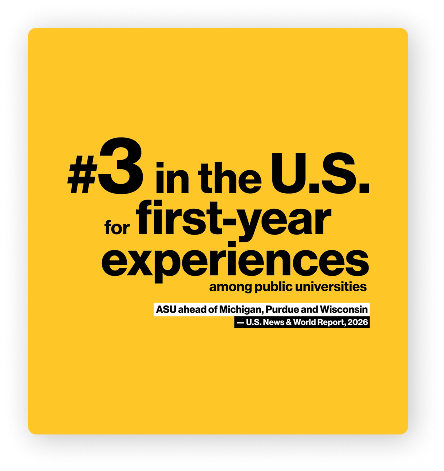
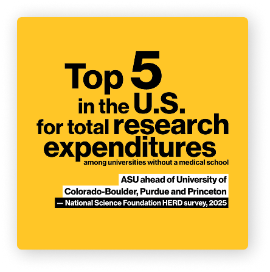
[Name], ’[YY], [degree or area of study]
[Name], ’[YY], [degree or area of study]
[Name], ’[YY], [degree or area of study]
[Name], ’[YY], [degree or area of study]
[Name], ’[YY], [degree or area of study]
Make it yours
Design a path around your interests and your ambitions — what you study, how and where you learn, who you’re with, what comes next. Everything here can flex and be customized by you — except our standard for academic excellence.
Your degree isn’t one fixed product — it’s a stack you assemble. Majors, minors, certificates, interdisciplinary specializations, built around what you want to do next.
Learn moreSame university, multiple ways in. On a campus in metro Phoenix or in downtown Los Angeles, fully online from anywhere, accelerated or hybrid — your life shapes the format, not the reverse.
Learn moreCommunity here takes many shapes. Live in a residential college with classmates in your major, or join one of 1,000+ student organizations — academic, faith, identity, interest or service.
Learn moreWhat you do outside class shapes who you become. Study abroad, civic engagement, internships with real industry partners — work that travels with you, and counts long after you leave.
Learn moreCollege is an important investment that you are making. ASU is here to help make costs easier to understand and help you explore options that may help pay for college.
Learn more
ASU is a comprehensive public research university, measured not by whom it excludes, but by whom it includes and how they succeed; advancing research and discovery of public value; and assuming fundamental responsibility for the economic, social, cultural and overall health of the communities it serves.
Your success is how we measure ours
Plenty of universities measure themselves by who they turn away. We measure ourselves by what you go on to do — and we build everything here to help you do it.
Silent video: a packed commencement in a stadium, students on campus and a graduate in a lab coat. On-screen text reads: Your career doesn’t start at graduation. It starts on Day 1. ASU graduates launch careers at the world’s top organizations. Careers start here. asu.edu.
Becoming career-ready starts on day one
Our focus on mentoring, internships and projects with industry partners means you graduate with real-world experience and skills that stand out to employers, not just a degree.
Silent video. On-screen text reads: ASU grads get hired here — Goldman Sachs, Deloitte, Mayo Clinic. Recent graduates and their first roles: John Anderies, 2025 BS in data science, Solutions Analyst, Deloitte; Devon Karabees-Lamer, 2025 BS in astrophysics, Commodities Trade Support Analyst II, Morgan Stanley; Dachi Tabatadze, 2025 BS in business data analytics and supply chain management, Supply Chain Program Manager, Microsoft. Number 2 in the U.S. for employability among public universities — ASU ahead of UCLA, University of Michigan and Purdue (Global Employability University Ranking and Survey, 4 years, 2023–26). asu.edu.
Real outcomes
Proof it adds up — an ASU degree opens real doors, whoever you are and wherever you go.
Dwayne Martin-Gomez, ’19, BS in global health
Barrett, The Honors College
The New York Times’ “gold standard” for honors colleges
Barrett, The Honors College provides the intimacy of a small college with the full reach of a Tier 1 research university.
Learn from the best.
Become your best.
The people who will teach, mentor and guide you are among the most accomplished in their fields. They’re here to help you go further in yours.
One university, many places
Four distinctive campuses throughout metropolitan Phoenix, as well as locations around the state, country and world.
Silent video: scenes from ASU’s campuses and locations. [Placeholder description — write against the final cut.]
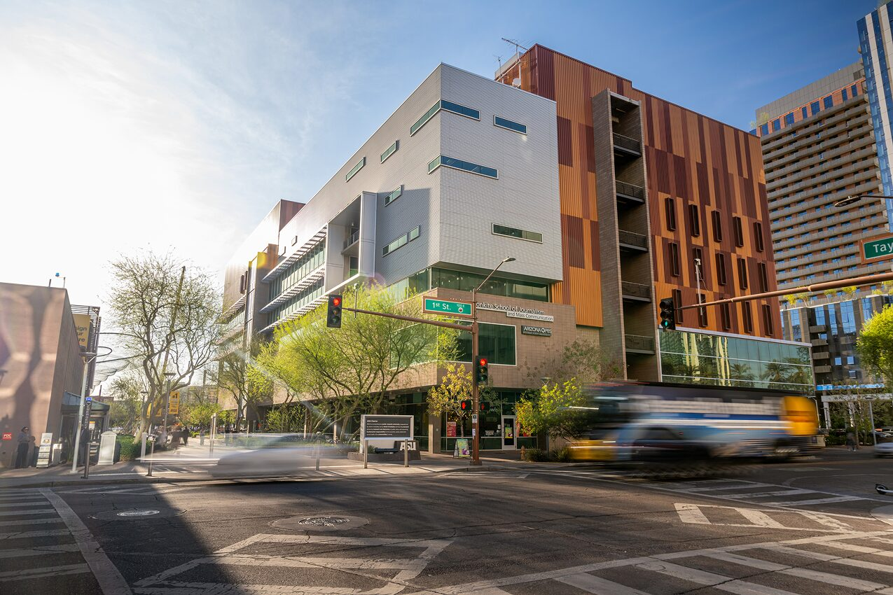
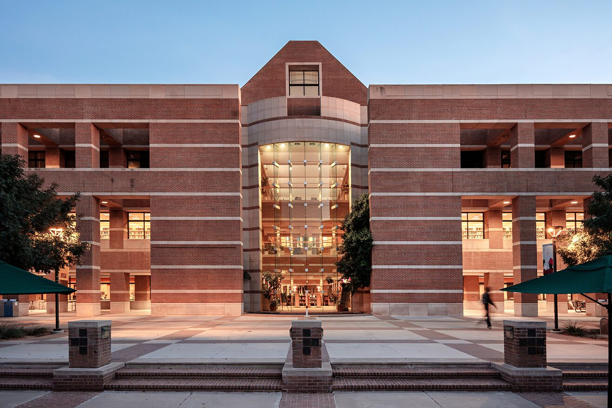
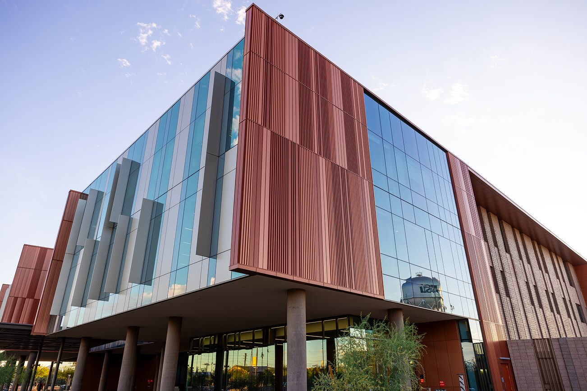
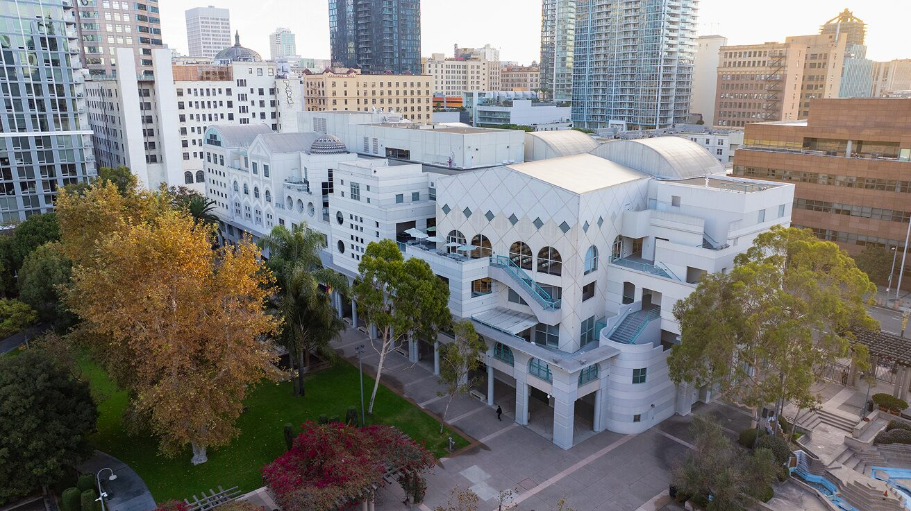
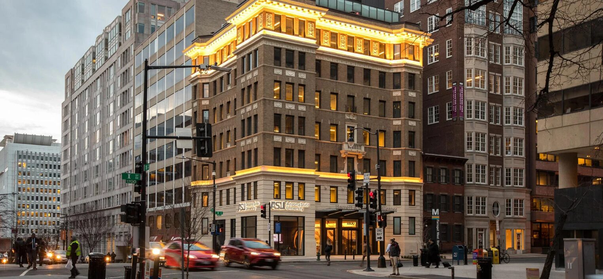
Phoenix metro area campuses
U.S. and International
The flagship campus — a walkable, tree-lined home to more than 55,000 Sun Devils.
See Tempe campusHealth, journalism, law and public service in the heart of the city.
See Downtown Phoenix campusAn Oxford-inspired oasis serving the dynamic workforce needs of a rapidly growing economy.
See West Valley campusHands-on engineering, technology and aviation on a former Air Force base in Mesa.
See Polytechnic campusPolicy, journalism and global affairs steps from Capitol Hill.
See ASU Washington, D.C.Silent video: scenes from ASU’s campuses and locations. [Placeholder description — write against the final cut.]
The flagship campus — a walkable, tree-lined home to more than 55,000 Sun Devils.
See Tempe campusHealth, journalism, law and public service in the heart of the city.
See Downtown Phoenix campusAn Oxford-inspired oasis serving the dynamic workforce needs of a rapidly growing economy.
See West Valley campusHands-on engineering, technology and aviation on a former Air Force base in Mesa.
See Polytechnic campusPolicy, journalism and global affairs steps from Capitol Hill.
See ASU Washington, D.C.A top U.S. university reimagining education for everyone
Breaking down education barriers and building up high quality, affordable and accessible learning opportunities for everyone, from K-12 to midcareer to postretirement and every individual in between.
Learn more